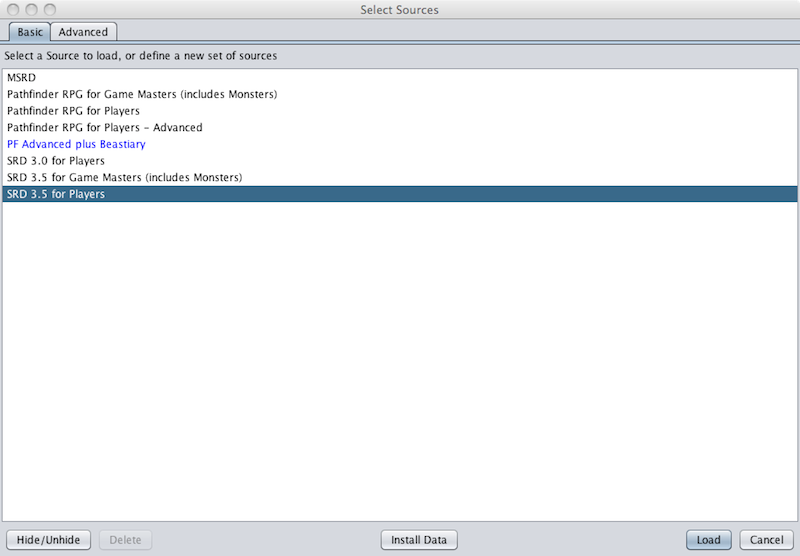
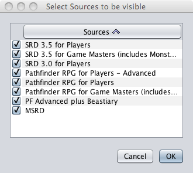
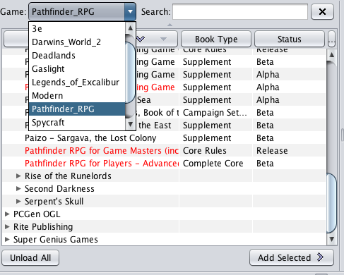
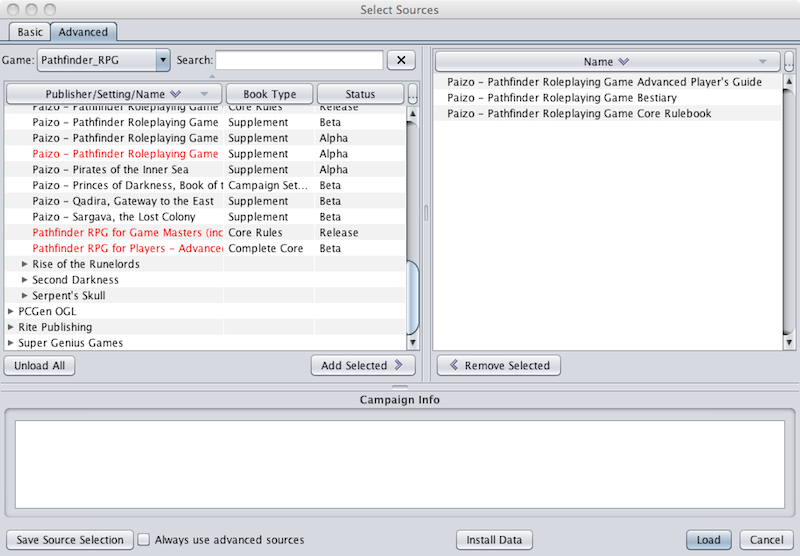

This window will load the data sets of your choice into PCGen. There are two modes of source selection, the Basic mode and the Advanced mode, each with its own Select Sources tab.
The Basic source select tab presents a number of preconfigured data sets for loading.

To load a preconfigured set you must first click on the desired set then click on the Load button. PCGen will change to the appropriate Gamemode and load the preconfigured data sets. You can add your own custom configurations to this list with the Save Source Selection button on the Advanced tab.

The Hide/Unhide button will allow you to hide or make visible any of the data sets listed. When you click on the button the Select Sources to be visible window pops up. Unckecking any source will hide it while checking it will make it visible in the Basic Select Sources tab.
The Install Data button will allow you to install an Out-of-Cycle (OOC) Data Set.
The Cancel button will close the Select Sources window without loading any data sets.
The Advanced source selection tab allows the user to select from the complete list of data sets for loading.

Data sets are configured to run in specific Gamemodes so the first step in loading data sets with the advanced tab is to select from the available gamemodes. Clicking on the Game drop-down menu will present a list of installed gamemodes. Clicking on the desired gamemode will present the compatible data sets in the Advanced tab's left pane.

To load data sets the user will select the desired sets, one at a time, and click the Add Selected > button. The selected sets will be added to the right pane. Data sets can also be selected for loading by double-clicking on the sets, moving the set to the right pane automatically. The < Remove Selected button can be used to remove data sets from the right pane. Once all desired sets have been placed into the right pane the user completes the loading process by clicking on the Load button.
Customized campaign sets can be created and saved by moving the desired sets to the right pane and then clicking the Save Source Selection button. The Save the source selection window will appear and the user will enter a name for the new campaign file. The newly created campaign file will be added to the list of preconfigured campaign files displayed on the Basic source selection tab.
The Install Data button will allow you to install an Out-of-Cycle (OOC) Data Set.
The Cancel button will close the Select Sources window without loading/changing data sets.